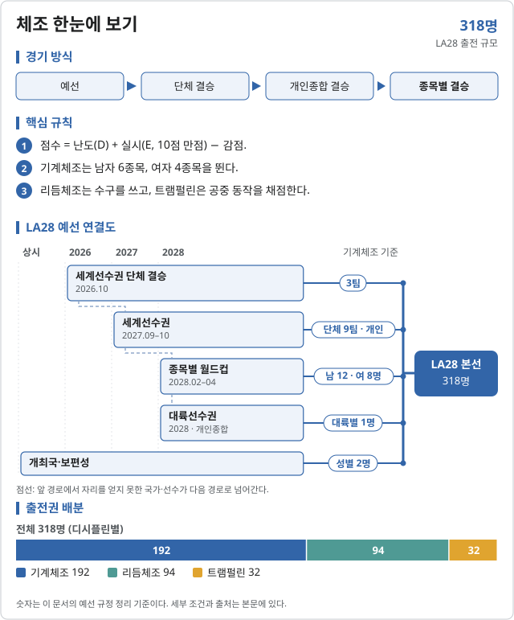

체조 (Gymnastics)
2028 LA 올림픽 체조에는 19개 세부종목이 있다.

LA28 출전 확정 2026-11-07 기준
| 국가 | 경로 | 비고 |
|---|---|---|
| 2026 세계선수권 단체 결승 | 금 251.928 | |
| 중립 선수 (러시아 선수단) AIN | 2026 세계선수권 단체 결승 | 은 250.329 · 중립팀 WG2 |
| 2026 세계선수권 단체 결승 | 동 249.193 |
| 국가 | 경로 | 비고 |
|---|---|---|
| 2026 세계선수권 단체 결승 | 금 165.764 | |
| 2026 세계선수권 단체 결승 | 은 | |
| 2026 세계선수권 단체 결승 | 동 |
중립 선수팀 자리가 올림픽에서 어떻게 쓰일지는 IOC 결정에 달려 있다. 나머지 9팀은 2027 세계선수권 단체 예선으로 정한다.
출처: NBC Sports · 2026 세계선수권 남자 단체 · ECNS · 중국 여자 단체 우승, LA28 출전권
2026 주요 대회 결과 2026-11-07 15:59 KST
위키백과 대회 문서에서 자동으로 모은다. 대회 중에는 한 시간마다 새로 읽는다. 한국 선수가 있는 줄은 붉게 칠했다. 하계 실시간 전체 →
FIG 기계체조 세계선수권 로테르담 · 10.17~10.25 종료 결과 10/14종목 · 한국 금0 은0 동0
| 종목 | 금 | 은 | 동 |
|---|---|---|---|
| Medalists | |||
| 남자 단체 | |||
| 남자 개인종합 | |||
| 남자 마루 | |||
| 남자 안마 | |||
| 남자 링 | |||
| 남자 도마 | |||
| 남자 평행봉 | |||
| 남자 철봉 | |||
| 여자 단체 | |||
| 여자 마루 | |||
남은 종목: 여자 개인종합, 여자 도마, 여자 이단평행봉, 여자 평균대
메달 순위:  미국 3-3-2 ·
미국 3-3-2 ·  중국 3-2-2 ·
중국 3-2-2 ·  일본 2-1-1 ·
일본 2-1-1 ·  아르메니아 2-0-2 ·
아르메니아 2-0-2 ·  알제리 2-0-0 ·
알제리 2-0-0 ·  브라질 1-0-1 ·
브라질 1-0-1 ·  차이니스 타이베이 1-0-0 ·
차이니스 타이베이 1-0-0 ·  러시아 0-2-2
러시아 0-2-2
출처: 위키백과 2026 World Artistic Gymnastics Championships · 2026-11-06 22:36 읽음
아이치·나고야 아시안게임 아이치·나고야 · 09.21~10.03 종료 결과 18/18종목 · 한국 금2 은0 동0
| 종목 | 금 | 은 | 동 |
|---|---|---|---|
| Artistic gymnastics | |||
| 단체 | |||
| 개인종합 | |||
| 마루 exercise | |||
| 안마 | |||
| 링 | |||
| 도마 | |||
| 평행봉 | |||
| 철봉 | |||
| 단체 | |||
| 개인종합 | |||
| 도마 | |||
| 이단평행봉 | |||
| 평균대 | |||
| 마루 exercise | |||
| Rhythmic gymnastics | |||
| Group 개인종합 | |||
| 개인종합 | |||
| Trampoline | |||
| 남자 개인 | |||
| 여자 개인 | |||
메달 순위:  중국 9-4-6 ·
중국 9-4-6 ·  일본 3-10-5 ·
일본 3-10-5 ·  필리핀 2-0-1 ·
필리핀 2-0-1 ·  우즈베키스탄 2-0-1 ·
우즈베키스탄 2-0-1 ·  대한민국 2-0-0 ·
대한민국 2-0-0 ·  이란 0-2-0 ·
이란 0-2-0 ·  카자흐스탄 0-1-2 ·
카자흐스탄 0-1-2 ·  북한 0-1-1
북한 0-1-1
출처: 위키백과 Gymnastics at the 2026 Asian Games · 2026-11-06 22:37 읽음
예선 규정
이벤트 및 출전 쿼터
3개 디시플린 318명이 출전한다. 기계체조는 단체 쿼터를 국가에, 개인 쿼터 대부분을 선수 이름으로 배정한다.
| 디시플린 | 일반쿼터 | 개최국쿼터 | 보편성쿼터 | 합계 |
|---|---|---|---|---|
| 기계체조 | 188 | 2 | 2 | 192 |
| 리듬체조 | 87 | 6 | 1 | 94 |
| 트램펄린 | 29~32 | 2 | 0~1 | 32 |
| 합계 | — | 10 | 3~4 | 318 |
기계체조 국가 상한: 단체 5명(교체 없음) 또는 단체가 없으면 개인 3명. 리듬체조: 개인 2 + 단체 5. 트램펄린: 성별 2명(최대 3개국).
예선 경로
디시플린마다 세계선수권 → 월드컵 → 대륙선수권 순으로 쿼터를 정한다.
기계체조 남자
기계체조 남자 선발 경로
96명 · 규정 ↗
| 경로 | 쿼터 | 선발 방식 |
|---|---|---|
| (C1) 2026 세계선수권 단체 | 3팀 15명 | [1] |
| (C2) 2027 세계선수권 단체 | 9팀 45명 | [2] |
| (C3) 2027 세계선수권 비자격 팀 개인 | 3명 | [3] |
| (C4) 2027 세계선수권 개인종합 | 남 8 · 여 14명 | [4] |
| (C5) 2027 세계선수권 종목별 | 남 6 · 여 4명 | [5] |
| (C6) 2028 종목별 월드컵 시리즈 | 남 12 · 여 8명 | [6] |
| (C7) 2028 대륙선수권 개인종합 | 5명 | [7] |
| (D.3) 개최국 · (D.4) 보편성 | 1명 · 1명 | [8] |
- [1]2026.10.17–25 세계선수권 단체 결승 상위 3개국이 5명 팀(교체 선수 없음)을 낸다.
- [2]2027.09.28–10.06 세계선수권 단체 예선 상위 9개국(C1 제외).
- [3]단체 쿼터가 없는 다음 3개국에 개인 1명씩(국가에 배정).
- [4]단체 미확보 국가 선수만, 국가당 1명. 이름으로 배정.
- [5]종목별 결승 1~3위 중 최상위 적격 선수 1명씩.
- [6]2028.02.24–04.15 종목별 월드컵(최고 4개 대회) 종목마다 2명.
- [7]대륙마다 개인종합 최상위 1명.
- [8]미국 남녀 1명씩. 보편성은 남녀 1명씩, IOC 초청 2027.10.01, 신청 마감 2028.01.15.
기계체조 여자
기계체조 여자 선발 경로
96명 · 규정 ↗
| 경로 | 쿼터 | 선발 방식 |
|---|---|---|
| (C1) 2026 세계선수권 단체 | 3팀 15명 | [1] |
| (C2) 2027 세계선수권 단체 | 9팀 45명 | [2] |
| (C3) 2027 세계선수권 비자격 팀 개인 | 3명 | [3] |
| (C4) 2027 세계선수권 개인종합 | 남 8 · 여 14명 | [4] |
| (C5) 2027 세계선수권 종목별 | 남 6 · 여 4명 | [5] |
| (C6) 2028 종목별 월드컵 시리즈 | 남 12 · 여 8명 | [6] |
| (C7) 2028 대륙선수권 개인종합 | 5명 | [7] |
| (D.3) 개최국 · (D.4) 보편성 | 1명 · 1명 | [8] |
- [1]2026.10.17–25 세계선수권 단체 결승 상위 3개국이 5명 팀(교체 선수 없음)을 낸다.
- [2]2027.09.28–10.06 세계선수권 단체 예선 상위 9개국(C1 제외).
- [3]단체 쿼터가 없는 다음 3개국에 개인 1명씩(국가에 배정).
- [4]단체 미확보 국가 선수만, 국가당 1명. 이름으로 배정.
- [5]종목별 결승 1~3위 중 최상위 적격 선수 1명씩.
- [6]2028.02.24–04.15 종목별 월드컵(최고 4개 대회) 종목마다 2명.
- [7]대륙마다 개인종합 최상위 1명.
- [8]미국 남녀 1명씩. 보편성은 남녀 1명씩, IOC 초청 2027.10.01, 신청 마감 2028.01.15.
리듬체조 개인종합
개인 선발 경로
24명 · 규정 ↗
| 경로 | 쿼터 | 선발 방식 |
|---|---|---|
| (C1) 2026 세계선수권 | 3명 | [1] |
| (C2) 2026–27 월드컵 시리즈 | 2명 | [2] |
| (C3) 2027 세계선수권 | 12명 | [3] |
| (C4) 2028 대륙선수권 | 5명 | [4] |
| (C5·C6) 개최국 · 보편성 | 1명 · 1명 | [5] |
- [1]8.12–16 프랑크푸르트 개인종합 결승 상위 3명(독일·불가리아·이탈리아).
- [2]8개 대회 중 최고 4개, 4개 대회 이상 출전.
- [3]2027 바쿠 개인종합 예선 상위 12명(국가 최대 2명).
- [4]대륙마다 미확보 국가 최상위 1명.
- [5]개최국은 미국 최상위 1명. 보편성은 2027 세계선수권 출전자 중 1명, IOC 초청 2027.10.01, 신청 마감 2028.01.15.
리듬체조 단체 (5명)
단체 선발 경로
14팀 70명
| 경로 | 쿼터 | 선발 방식 |
|---|---|---|
| (C1) 2026 세계선수권 | 3팀 | [1] |
| (C2) 2026–27 월드컵 시리즈 | 1팀 | [2] |
| (C3) 2027 세계선수권 | 4팀 | [3] |
| (C4) 2028 대륙선수권 | 5팀 | [4] |
| (C5) 개최국 | 1팀 | [5] |
- [1]프랑크푸르트 단체 상위 3개국(스페인·일본·브라질).
- [2]월드컵 단체 랭킹 1위(4개 대회 이상).
- [3]2027 바쿠 단체 상위 4개국. 출전은 2026 세계선수권 상위 24개국 등으로 제한.
- [4]대륙마다 1팀.
- [5]미국 1팀(2026 세계선수권 단체 출전 필요).
트램펄린 · 남녀 공통
트램펄린 선발 경로
성별 16명 · 규정 ↗
| 경로 | 쿼터 | 선발 방식 |
|---|---|---|
| (C1) 2027 세계선수권 | 8명 | [1] |
| (C2) 2027–28 월드컵 시리즈 | 4~12명 | [2] |
| (C3) 2028 대륙선수권 | 최대 4명 | [3] |
| (D.2) 개최국 | 1명 | [4] |
| (D.3) 보편성 | 0~1명 | [5] |
- [1]2027.11 세계선수권 결승 상위 8명, 국가당 1명.
- [2]6개 대회 중 최고 3개 성적 랭킹. C1 미확보 국가 1명씩 + 랭킹 상위 3명은 국가 두 번째 자리 가능(국가 2명은 최대 3개국).
- [3]앞 경로로 대표가 없는 대륙 최상위 1명. C1·C2 대회 출전 이력이 있어야 한다.
- [4]미국이 다른 경로로 확보하지 못하면 남녀 1명씩.
- [5]남녀 합쳐 1명. 성별 16명 정원 안에서 조정한다.
개최국·보편성 쿼터
개최국 미국은 기계체조 남녀 1명씩, 리듬체조 개인 1명·단체 1팀, 트램펄린 남녀 1명씩을 보장받는다(다른 경로로 확보하지 못한 경우).
보편성 쿼터는 기계체조 남녀 1명씩, 리듬체조 개인 1명, 트램펄린 최대 1명이다.
참가 자격
올림픽 헌장(제41조 국적, 제43조 세계반도핑규약 및 경기 조작 방지 규정), 여성 카테고리 보호에 관한 IOC 정책, IOC 참가 조건 및 FIG 규정을 충족해야 한다. FIG 라이선스가 올림픽 종료까지 유효해야 한다.
| 디시플린 | 출생 기준 |
|---|---|
| 기계체조 남자 | 2010.12.31 이전 |
| 기계체조 여자 | 2012.12.31 이전 |
| 리듬체조 | 2012.12.31 이전 |
| 트램펄린 | 2011.12.31 이전 |
예선 일정
예선 및 대회 일정
2026년에는 리듬체조 세계선수권(8월)에서 첫 쿼터가 나왔고, 10월 기계체조 세계선수권에서 단체 3팀이 정해진다.
| 날짜 | 일정 |
|---|---|
| 2026.08.12–16 | 리듬체조 세계선수권 프랑크푸르트 · 개인 3명·단체 3팀 확정 |
| 2026.10.17–25 | 제54회 기계체조 세계선수권 · 단체 3팀 |
| 2027.05–10 | 트램펄린 월드컵 3개 대회 |
| 2027.09.15–19 | 리듬체조 세계선수권 바쿠 |
| 2027.09.28–10.06 | 제55회 기계체조 세계선수권 |
| 2027.11 | 트램펄린 세계선수권 |
| 2028.01.15 | 보편성쿼터 신청 마감 |
| 2028.02–04 | 트램펄린 월드컵 3개 대회 · 기계체조 종목별 월드컵 |
| 2028.04–05 | 대륙선수권 (3개 디시플린) |
| 2028.06.26 | LA28 스포츠 엔트리 마감 |
직전 올림픽 메달리스트
2024 파리 올림픽
| 세부종목 | 금 | 은 | 동 |
|---|---|---|---|
| 남자 단체 | JPN | CHN | USA |
| 남자 개인종합 | Shinnosuke Oka (JPN) | Zhang Boheng (CHN) | Xiao Ruoteng (CHN) |
| 남자 마루 | Carlos Yulo (PHI) | Artem Dolgopyat (ISR) | Jake Jarman (GBR) |
| 남자 안마 | Rhys McClenaghan (IRL) | Nariman Kurbanov (KAZ) | Stephen Nedoroscik (USA) |
| 남자 링 | Liu Yang (CHN) | Zou Jingyuan (CHN) | Eleftherios Petrounias (GRE) |
| 남자 도마 | Carlos Yulo (PHI) | Artur Davtyan (ARM) | Harry Hepworth (GBR) |
| 남자 평행봉 | Zou Jingyuan (CHN) | Illia Kovtun (UKR) | Shinnosuke Oka (JPN) |
| 남자 철봉 | Shinnosuke Oka (JPN) | Ángel Barajas (COL) | Zhang Boheng (CHN) / Tang Chia-hung (TPE) |
| 여자 단체 | USA | ITA | BRA |
| 여자 개인종합 | Simone Biles (USA) | Rebeca Andrade (BRA) | Sunisa Lee (USA) |
| 여자 도마 | Simone Biles (USA) | Rebeca Andrade (BRA) | Jade Carey (USA) |
| 여자 이단평행봉 | Kaylia Nemour (ALG) | Qiu Qiyuan (CHN) | Sunisa Lee (USA) |
| 여자 평균대 | Alice D'Amato (ITA) | Zhou Yaqin (CHN) | Manila Esposito (ITA) |
| 여자 마루 | Rebeca Andrade (BRA) | Simone Biles (USA) | Ana Bărbosu (ROM) |
| 혼성 단체 | 신설 | ||
| 여자 리듬체조 개인종합 | Darja Varfolomeev (GER) | Boryana Kaleyn (BUL) | Sofia Raffaeli (ITA) |
| 여자 리듬체조 단체종합 | CHN | ISR | ITA |
| 남자 트램펄린 | Ivan Litvinovich (AIN) | Wang Zisai (CHN) | Yan Langyu (CHN) |
| 여자 트램펄린 | Bryony Page (GBR) | Viyaleta Bardzilouskaya (AIN) | Sophiane Méthot (CAN) |
대한민국
한국 출전 전망
2026-10-04 기준 참고현재 성적을 LA28 규정에 단순 적용한 참고치이며 2028 확정 전망이 아님.
인원 범위 미산정 · 2027 세계선수권이 핵심
기계체조 단체 쿼터 12팀 중 9팀이 2027 세계선수권에서 정해진다. 한국 남자 단체는 이 경로, 여자는 개인종합·종목별 경로가 현실적이다. 리듬체조 2026 세계선수권 쿼터에 한국은 없었다.
| 선수·팀 | 공개 성적 | 근거 |
|---|---|---|
| 여서정 | 2026 아시안게임 여자 도마 금 (14.483) | 파이낸셜뉴스 · 2026.09.24 |
| 리듬체조 2026 세계선수권 | 개인 독일·불가리아·이탈리아 · 단체 스페인·일본·브라질 확보 | Olympics.com |
기계체조 종목별: 2027 세계선수권 종목별 결승(1~3위 중 1명)과 2028 종목별 월드컵(종목당 2명)이 도마 등 종목 전문 선수의 경로다.
리듬체조·트램펄린: 2028 대륙선수권의 아시아 1자리가 남은 현실적 경로다.
자료 기준: 2026 아시안게임 기계체조 결과, 2026 리듬체조 세계선수권 결과.
체조 · 올림픽예선 | 규정 확인 2026.10.04 · 한국 전망 기준 2026.10.04
각주
외부 링크
공식 근거
- FIG · LA28 Qualification System, Artistic (PDF, 2026.06.03)
- FIG · LA28 Qualification System, Rhythmic (PDF, 2026.05.12)
- FIG · LA28 Qualification System, Trampoline (PDF, 2026.05.12)
- Olympics.com · 2026 리듬체조 세계선수권 결과·LA28 쿼터
- 파이낸셜뉴스 · 여서정 아시안게임 도마 금 (2026.09.24)
규정 확인일: 2026.10.04. IOC가 게시한 FIG 원문 PDF 3종을 기준으로 정리했다. 기계체조 원문은 혼성 단체를 신설 종목으로 적지만 별도 쿼터·출전 방식은 적지 않았다. 본 문서는 비공식 한국어 요약이며 최종 적용은 FIG 공지를 따른다.